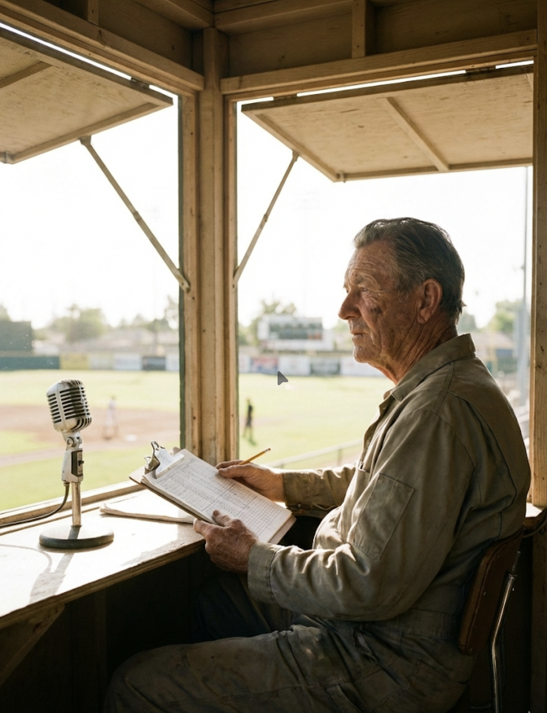
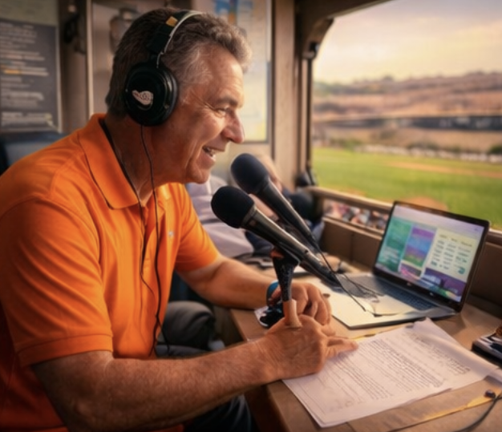
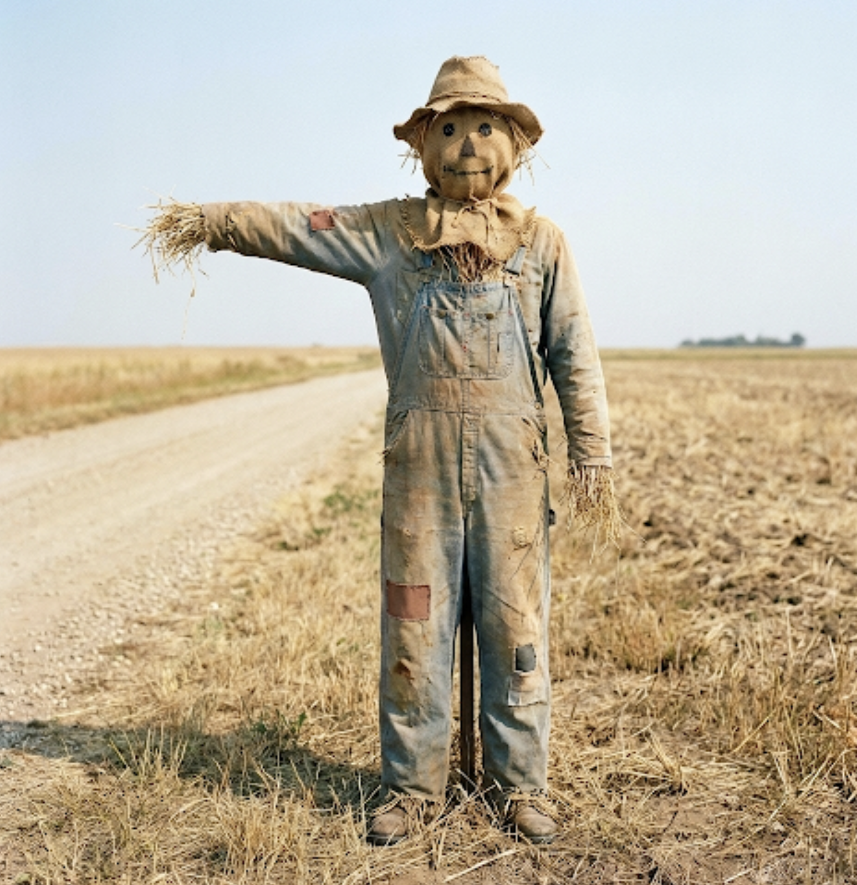
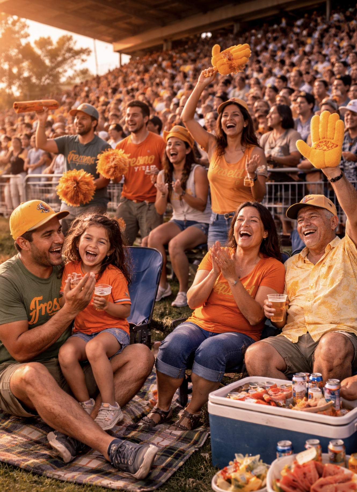

Fresno Yield
Americas DivisionThe Club
Fresno doesn’t explain itself. It shows up sun-warmed and over-prepared—coolers, cousins, and a crowd that looks like it drove in from every edge of the valley. You feel it most in the pauses: late light on the dirt, a hum behind home plate, and the sense that the park is part game, part local gathering.
Ballpark

The Corn Cathedral. Brick, grass, and heat shimmer—warm lights waking up as the sun drops. It feels agricultural without leaning into parody: real baseball in a place where summer is a permanent condition.
Broadcast & Announcer

Sunny Jim
Warm, unhurried calls that drift into weather and harvest talk—like a neighbor narrating the inning from a porch with a view of the diamond.

Marla “Bell” Rios
Clear cadence, county-fair energy. Between innings she can turn a routine sponsor read into a ritual the crowd somehow respects.
Mascot & Stands

The Husk
A human-worn suit with real seams and real scuffs—beloved because it’s slightly imperfect. It moves like it’s been doing this for years: high-fives, rail-leaning, kids reaching up.

The Picnic Hills
A crowd that looks lived-in: blankets, sunburn, gold accents, and a soft roar that rises fast when something real happens on the field.